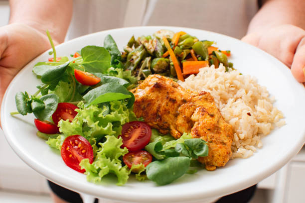

Conheça alguns alimentos saudáveis e suas principais características.

| Informações sobre alimentos | |||||||
|---|---|---|---|---|---|---|---|
| Alimento | Categoria | Calorias | Proteína | Carboidratos | Gorduras | Fibras | Benefício |
| Maçã | Fruta | 52 kcal | 0,3 g | 14 g | 0,2 g | 2,4 g | Ajuda na digestão |
| Banana | Fruta | 89 kcal | 1,1 g | 23 g | 0,3 g | 2,6 g | Fornece energia |
| Laranja | Fruta | 47 kcal | 0,9 g | 12 g | 0,1 g | 2,4 g | Fonte de vitamina C |